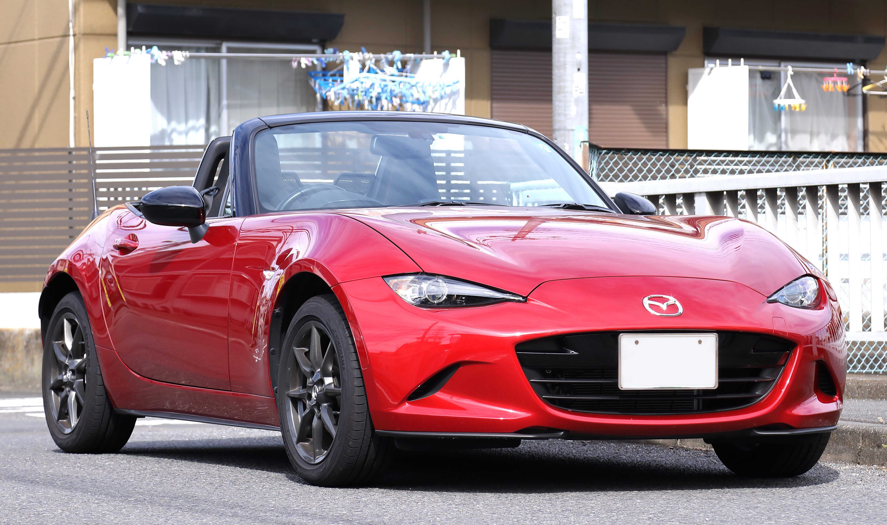
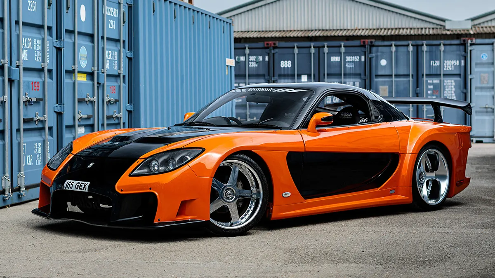
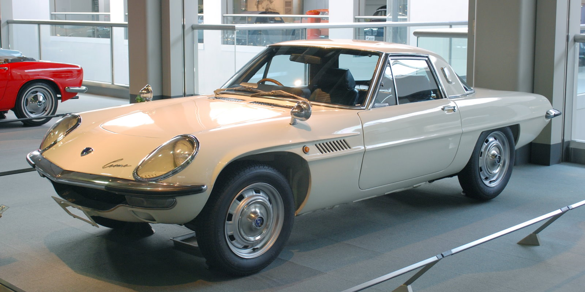
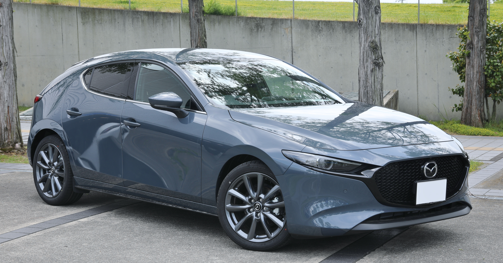
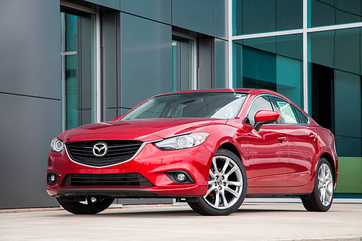
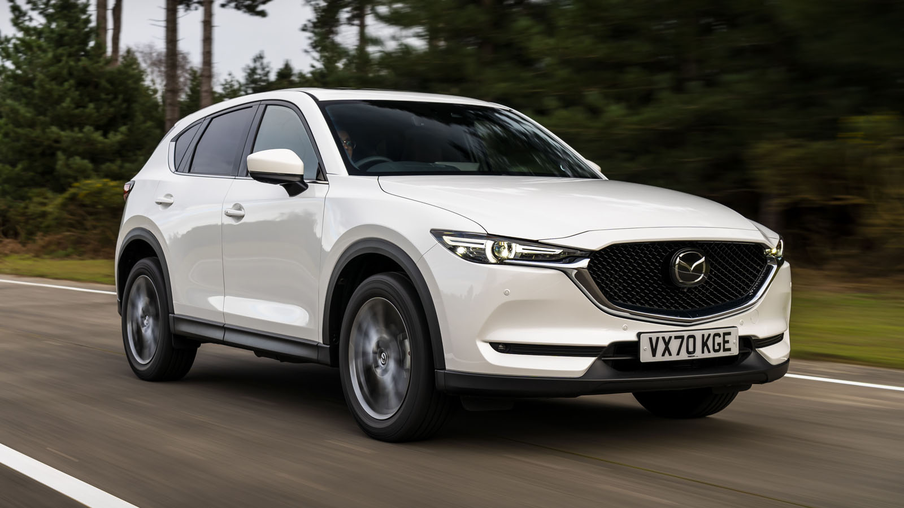
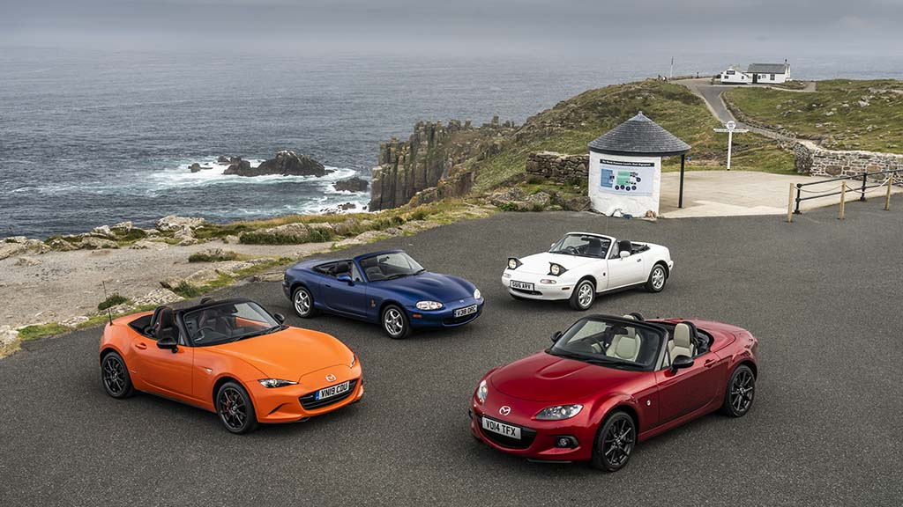
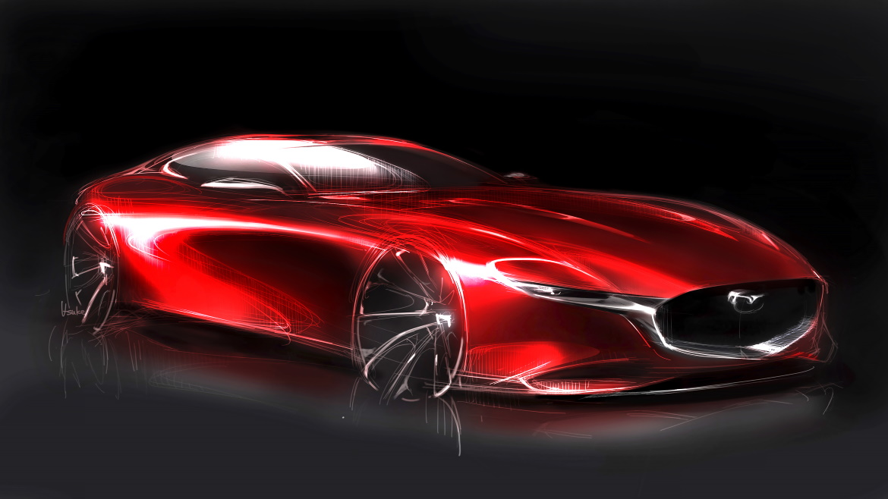
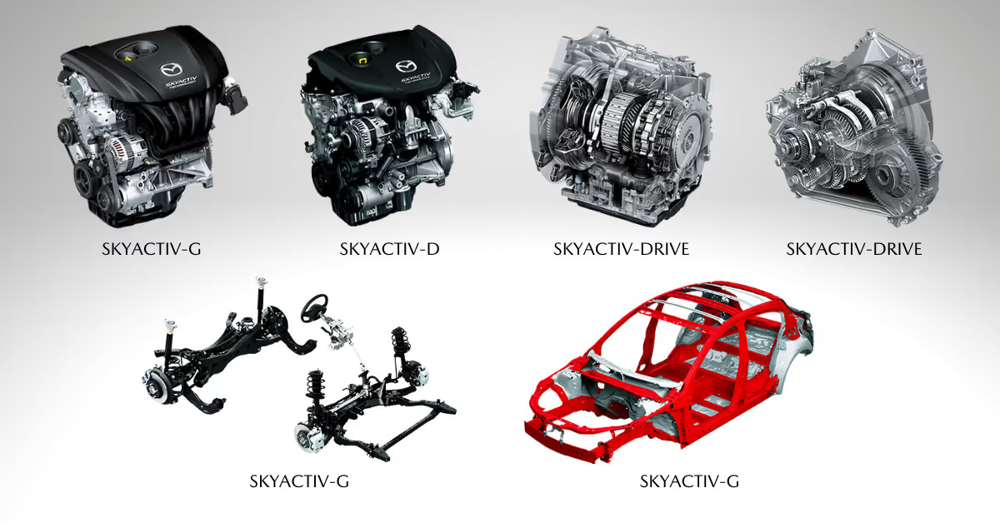

Mazda
Zoom-Zoom
Founded: 1920
Country: Japan
Icon: MX-5 Miata
Rotary Pioneer
Zoom-Zoom
Mazda's story is one of passion, innovation, and the courage to be different. Founded in 1920 as Toyo Cork Kogyo, the company began as a manufacturer of machine tools and cork products. It wasn't until 1931 that the company entered vehicle production with the Mazda-Go, a three-wheeled "truck."
The Mazda name comes from Ahura Mazda, the god of wisdom in Zoroastrianism, and also pays homage to founder Jujiro Matsuda. The company formally adopted the Mazda name in 1984.
After World War II, Mazda began producing four-wheeled vehicles. The 1960 R360 Coupe, a tiny two-door, was Mazda's first passenger car. But it was the 1961 agreement with German company NSU that would define Mazda's unique path: a license to develop the Wankel rotary engine.
While other companies abandoned the rotary as impractical, Mazda poured resources into perfecting it. A team of engineers, later called the "Rotary 47" (because 47 of them worked on the project), solved the engine's reliability issues. The 1967 Cosmo Sport 110S was the world's first production car with a two-rotor engine.
The rotary engine became Mazda's signature. The 1970s RX-2, RX-3, and RX-4 built the brand's performance reputation. The 1978 RX-7 became a legend - a beautiful, lightweight sports car with a smooth-revving rotary that captured enthusiasts' hearts worldwide.
But Mazda's most profound impact came in 1989 with the MX-5 Miata. Inspired by classic British roadsters but with Japanese reliability, the Miata redefined the affordable sports car. It became the best-selling two-seat convertible in history and proved that driving pleasure doesn't require massive power.
Through the 1990s and 2000s, Mazda refined its "Zoom-Zoom" philosophy - building cars that were fun to drive, even in mundane segments. The Mazda3 and Mazda6 stood out for their engaging dynamics. The RX-8 (2003) attempted a rotary revival with unique rear-hinged doors.
Today, Mazda is charting its own course toward premium status. The Kodo design language produces some of the most beautiful cars in any segment. SkyActiv technology optimizes every aspect of the car. And while the rotary is currently dormant, Mazda has promised its return as a range-extender for future electric vehicles.
"The rotary engine was a challenge, but we believed in it. That belief became part of our identity."- Kenichi Yamamoto, father of the rotary engine

4 generations | 1989-present
The best-selling two-seat sports car in history. Inspired by classic Lotus Elan, the Miata proved that "light is right" - simple, lightweight, rear-wheel drive, and pure driving joy.

1978-2002
A rotary-powered legend. The FB (1978), FC (1985), and FD (1992) each defined their era. The FD is widely considered one of the most beautiful cars ever designed.

1967-1972
The first production rotary car. Beautiful, advanced, and rare - only 1,176 built. The car that proved the rotary engine could work.

2003-2012
A unique 4-door rotary sports car with rear "freestyle" doors. The RENESIS engine was the last production rotary.

2003-present
The compact that drives like nothing else in its class. Multiple "Car of the Year" awards and the car that proved economy cars can be fun.

2002-present
The stylish midsize sedan that brought Kodo design to the mainstream. A genuine alternative to German offerings.

2012-present
The SUV that doesn't drive like one. Mazda's best-seller and proof that SUVs can be engaging.
The Wankel rotary engine is fundamentally different from piston engines. Instead of pistons moving up and down, a triangular rotor spins inside an epitrochoid housing, completing the four cycles of combustion in each rotation.
Mazda has announced the rotary will return as a range-extender for electric vehicles, keeping the dream alive.

"The rotary engine sings a different song. It's smooth, it revs freely, and it makes you feel connected to something special."- Mazda engineer
In the 1980s, the affordable sports car was dying. The British roadsters that had defined the segment - MG, Triumph, Lotus - were gone or greatly diminished. Mazda journalist Bob Hall suggested Mazda could fill the void.
The concept was simple: a lightweight, rear-wheel drive, two-seat convertible with modern reliability and classic spirit. The design team studied the Lotus Elan extensively, aiming to capture its essence while improving everything.
The first-generation NA (1989) was an immediate sensation. Pop-up headlights, perfect 50:50 balance, 2,100 lbs weight, and a 1.6L engine with just 116 hp - but it was never about power. It was about connection: "Jinba Ittai" (horse and rider as one).
Each generation has refined the formula:
Over 1 million Miatas have been sold, earning a Guinness World Record. It's the most raced car in SCCA history, with its own spec racing series. The Miata proves that driving pleasure doesn't require speed - just the right connection between car and driver.

"Kodo - Soul of Motion" is Mazda's design philosophy, introduced in 2010. It aims to capture the energy and tension of a living creature in motion - even when the car is standing still.
Key elements include:
The Shinari concept (2010) introduced Kodo. The first production application was the CX-5 (2012), followed by the Mazda6, Mazda3, and every Mazda since. The design language has evolved to become more sophisticated, with the Vision Coupe concept hinting at future directions.
Kodo has elevated Mazda's brand perception, allowing them to compete with premium brands on design if not price. Many consider Mazda's current lineup the most beautiful in their respective segments.

SkyActiv isn't a single technology - it's a comprehensive approach to improving every aspect of the vehicle. Rather than add complexity, Mazda went back to basics, optimizing each component.
High compression ratio (13:1 in some markets) for efficiency without hybrid complexity.
Low compression diesel that's clean enough for most markets.
Six-speed automatic with lock-up torque converter for direct feel.
Precise, short-throw manual transmission.
Lightweight, rigid platform.
High-strength steel construction for safety and rigidity.
SkyActiv vehicles achieve class-leading fuel economy while maintaining (or improving) driving dynamics - the perfect expression of Mazda's philosophy.

The 787B's victory at Le Mans remains one of motorsport's greatest upsets. The screaming rotary engine, distinctive orange and green livery, and against-all-odds triumph are legendary.